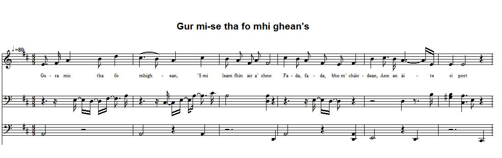
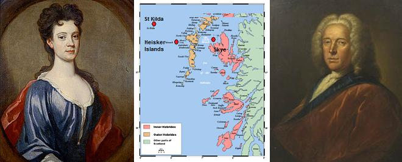

Òran Fir Hèisgeir
Song of the Heisker Man - Chant pour l'Homme de Heisker
by Rachel McDonald (Raonaid Nighean 'ic Neill, c.1750 - c. 1820)
Tune (midi)
Tune (mp3)
Òran Fir Hèisgeir
Òran Fir Hèisgeir

|
To the tune
As sung by Nan McKinnon and recorded by Donald Archie McDonald, Mary McDonald and Ian Fraser at Harris, St Kilda Island. Track 62346 kept in the collection of the "School of Scottish Studies". (Permanent Link: //www.tobarandualchais.co.uk/fullrecord/62346/1). This pentatonic melody (but for one note) is an instance of "iorram" (rowing song). To the text As stated in the 'The MacDonald Collection of Gaelic Poetry' (by Revs. A. and A. MacDonald eds., 1911, p. xxiii), the present song was composed by Rachel MacDonald , also known as Raonaid Nighean 'ic Neill , a daughter of Neil Macdonald, Grenitote, North Uist, where she was born about 1750. She died at Lineclate, Benbecula, about 1820, and was buried at Nunton. Only a few of her songs have been preserved. This song had the same fate as the foregoing Lament for Lady McIntosh . It was, at least locally, considered a Jacobite song, which, in fact, it was not. Revs. A. and A. McDonald write: "This song is in praise of Archibald McLean of Heisker , in North Uist. His powers as a steersman and the seaworthy qualities of his galley are powerfully depicted. Archibald was a son of Iain Mac- Ghilleasbuig Og of Heisker, of the family of Boreray. He was at this time tacksman of Heisker and Steelbow tenant of Peinmore, now part of Balranald. He emigrated to Canada, and died at Ontario in the early part of last century." Nan McKinnon (Nan Eachainn Fhionnlaigh, 1903-1982, who was born and lived at Vatersay, Island of Barra), the contributor to the School of Scottish Studies record, sings two verses of this song which she links with a story with Jacobite background . It goes as follows: "Lady Grange lived in Prince Charlie's time [In fact, she died on 12th May 1745 and Prince Charles landed at Moidart on 5th July 1745]. She was her husband's second wife. She and her stepson got on very well, but the boy was persuaded to take her to St. Kilda and leave her there. He was afraid she would betray the Prince." The true story of Lady Grange will be found in note [2] below. On the occasion of another record (by James Ross, on 24.07.1956, track ID - 19290), the same Nan McKinnon had ascribed the song to Lady Grange (!) , the heroine of the story, maybe due to the fact that Rachel Chiesley, known as Lady Grange, had the same Christian name as the true authoress of the poem, Rachel McDonald: "The song was composed by Lady Grange when she was abandoned on St Kilda by her husband, whom she was separated from, and who feared she was causing him trouble by accusing him of being a Jacobite sympathiser. She composed this song when she saw his boat leaving St Kilda. She was sorrowful, sitting alone on a hillock, far away from her relations. She saw his boat sailing around the headland and cutting through the waves." We may assume that Nan McKinnon here again is confused: she mistakes this song for the famous Flora McDonald's Lament composed by James Hogg and Neil Gow Jr. Part of the present English translation (st. 1-8, 13-16 and 19-20) was found in the comments to Julie Fowlis' video, sung to the tune of Mile marbhaisg air an t-saoghal : https://www.youtube.com/watch?v=FMapSWdJgUU (Julie Fowlis - Oran Fir Heisgeir / Gura Mis' Tha Fo Mhighean). |
A propos de la mélodie
Chantée par Nan McKinnon et enregistrée par Donald Archie McDonald, Mary McDonald et Ian Fraser à Harris, Île de St Kilda. N° de matrice 62346 de la collection de la "School of Scottish Studies". (Lien permanent: //www.tobarandualchais.co.uk/fullrecord/62346/1). Cette mélodie pentatonique (sauf pour une note) est un exemple de "iorram" (chant de rameurs). A propos du texte Comme il est dit dans la 'MacDonald Collection of Gaelic Poetry' (des Rév. A. et A. MacDonald éditeurs, 1911, p. xxiii), le présent chant fut composé by Rachel McDonald , alias Raonaid Nighean 'ic Neill , la fille de Neil McDonald, originaire de Grenitote, North Uist, où elle naquit vers 1750. Elle mourut à Lineclate, Benbecula, vers 1820, et est enterrée à Nunton. Seuls quelques uns de ses chants ont été conservés. Il en va de ce chant comme du précédent L'élégie de Lady McIntosh : Il fut, au moins localement, considéré comme un chant Jacobite, ce qu'il n'était pas, en réalité. Les Rév. A. et A. McDonald écrivent: "Ce chant fait l'éloge d' Archibald McLean de Heisker , en North Uist. Ses talents de pilote et la résistance de son bateau y son décrits de façon magistrale. Archibald était le fils de Ian Mac- Ghilleasbuig Og de Heisker, appartenant à la famille des Boreray. A l'époque il était intendant (tacksman) de Heisker et métayer de Steelbow en Peinmore (aujourd'hui Balranald). Il émigra au Canada et mourut à Ontario au début du 19ème siècle." Nan McKinnon (Nan Eachainn Fhionnlaigh, 1903-1982, qui naquit et mourut à Vatersay, Île de Barra), qui chanta pour cet enregistrement de la School of Scottish Studies, en interprète deux strophes qu'elle relie à l' histoire sur fond de rébellion Jacobite que voici: "Lady Grange vécut à l'époque du Prince Charles [en réalité, elle mourut le 12 Mai 1745 et le Prince débarqua à Moidart le 5 juillet 1745]. Son mari l'avait épousée en secondes noces. Elle s'entendait bien avec son beau-fils, jusqu'à ce qu'on convainque le jeune homme de l'emmener à St. Kilda et de l'y laisser. Il craignait qu'elle ne trahisse le Prince." L'histoire véridique de Lady Grange fait l'objet de la note [2] ci-après. Lors d'un autre enregistrement (par James Ross, le 24.07.1956, n° de matrice 19290), la même Nan McKinnon atribuait la composition du chant à Lady Grange (!) , l'héroïne de l'histoire, peut-être du fait de l'identité du prénom de Lady Grange, née Rachel Chiesley, et de celui du véritable auteur du poème, Rachel McDonald: "Ce chant fut composé par Lady Grange lorsqu'elle fut abandonnée dans l'archipel de St Kilda par son mari dont elle vivait séparée. Ce dernier craignait qu'elle ne lui attire des ennuis en l'accusant d'être un sympathisant Jacobite. Elle composa ce chant en voyant son bateau quitter Saint-Kilda. Elle était désespérée, assise seule sur un mamelon, loin des siens. Elle voyait son bateau contourner le promontoire et filer au large." Il est permis de penser qu'ici encore Nan McKinnon se trompe: elle semble confondre ce chant avec les fameuses lamentations de Flora McDonald que l'on doit à James Hogg et Neil Gow Jr. Une partie (str. 1-8, 13-16 et 19-20) de la présente traduction anglaise provient de commentaires inspirés par la vidéo de Julie Fowlis' , qui chante ce poème sur l'air de Mile marbhaisg air an t-saoghal : https://www.youtube.com/watch?v=FMapSWdJgUU (Julie Fowlis - Oran Fir Heisgeir / Gura Mis' Tha Fo Mhighean). |

|
SONG OF THE HEISKER MAN
Composed by Rachel McDonald in a harbour of the Isle of Skye. 1. Fear Heisgeir is coming; You are the destination of hundreds You are the destination of the company Not a withered niggard; 2. On reaching your homestead A while before sunset You are the son of the good father Who was always benevolent. 3. I am melancholy Alone on the hillock Far, far from my relations Stranded in this place. 4. Till your ship was seen, Full sailed Coming in to the Aird Son of the hero on the gunwale. 5. Son of the hero at the helm Coming towards the Troit The waters of the straits are roaring The sea rising around her yards; 6. Your hand is so skilled, She did not lose her strength Though the black-blue sea Would scour over her. 7. Though the seas were overpowering And tested the top of the mast And the sail yards Increasing the speed of the ship; 8. She would be spirited, light, Rising between each glen Sea crashing her oak timbers Opening ribs and scales. 9. Though they cry, ready to give up, No frown was seen on your face; Not an instant did you think of abandoning In spite of the heavy shower; 10. Nothing would frighten you away from the helm, No oncoming danger, no raging billow; Even if the livid waves Endeavour to loosen the planking's seams. 11. It is astonishing to see the cutter, Now on top of the wave; As determined and firm, As she seemed tightly fettered a moment ago; 12. The team itself is as skilful, At handling cables and ropes, And the hide-an-seek game with the harbour, Will soon come to an end amidst the glens. 13. You were the sea skipper You were the elegant helmsman You were the one who could steer When the rest refused; 14. Though they were overcome Lying down in the bilge water You would keep her laughing Till she reached land. 15. There's not a coastal point Between her and a'Chaoird-dhearg Between Leith and each harbour From which they anchored or sailed; 16. There isn't a ship's master Who heard of your expertise Who isn't asking and enquiring Where your ship is to be found. 17. The wild ocean did not leave, Its dismal imprint on your face, Your undaunted face, Nor did it make your foot stagger; 18. In spite of threatening reefs, Of storm and pouring shower, The passengers' reliance is strong, That their lives are put into good hands. 19. Beautiful sound ship, Taking on the seas Sailing straight as an arrow Despite strong headwinds 20. Though there was a hailstorm And snow from the north Fear Heisgeir will take it on And never falter in the face of rough seas. |
ORAN FIR HEISGIR
le Raonaid Dhomhnullach, air dhi bhi port's an Eilein Sgiathanach. 1. Tha Fear Heisgeir a’ tighinn; Bu tu ceann-uidhe nan ceud, Bu tu ceann-uidhe na cuideachd, ’S cha bu sgrubaire crìon; 2. ’N àm ruighinn do bhaile, Seal mu ’n cromadh a’ ghrian; Bu tu mac an deagh athair, Bha gu mathasach riamh. 3. Gura mis’ tha fo mhìghean, ’S mi leam fhìn air a’ chnoc, Fada, fada, bho m’ chàirdean, Ann an àite ri port; 4. Gus am facas do bhàta, Le siùil àrda ri dos, Tigh’nn a-steach chun na h-Àirde ’S mac an àrmuinn air stoc. 5. Mac an àrmainn air stiùir, A tigh’nn a dh’ ionnsuidh an Troit; Gu bheil an caolas a’ beucadh, ’S muir ag èirigh mu slait; 6. Tha do làmh-sa cho gleusda, ’S nach do thrèig ise neart; Ged a thigeadh muir dùbh-ghorm, Chuireadh sgùradh a-steach. 7. ’S ged bhiodh cìosnachadh mar’ ann, ’Bhuileadh barraibh a crann, ’Chuireadh dh’ ionnsaigh a slat i, ’S luaithe h-astar na long; 8. Bhiodh i gu h-aotrom, aigionnach, , ’G èiridh eadar gach gleann, ’S muir a’ bualadh mu darach, ’Fuasgladh reangan is lann. 9. Ged a dh' èigheadh iad abhsadh, Cha bu sgraing thigeadh ort ; Cha bu bheò thu 'ga trèigsinn, 'Nuair a dh' èireadh an fhras ; 10. Cha chuireadh eagal o'n stiuir thu, An càs no 'n cimnart air bith ; Ged bhiodh tonnan taobh-uaine, Fuasgladh fuaghal a slios. 11. 'S ann leat a b' eibhinn a sealladh, 'S i air bharraibh nan tonn ; 'S gu bheil an iubhrach cho daingionn, 'S i air a ceangal cho teanu ; 12. A sgiobadh fèin, 's iad cho ealant', 's am 'bhi tarruing a ball, Gus am buaileadh i cala, Troimh na gleannaibh 'na deann. 13. Bu tu sgiobair na fairge, Bu tu fear falmadair grinn, Gur tu b’ urrainn a stiùireadh, ’Nuair a dhiùltadh iad i; 14. Ged a bheireadh iad thairis, ’S iad na luidhe ’s an tuim, Chumadh tusa i cho gàireach, Gus an tàrradh i tìr. 15. Cha 'n eil aon rugha cladaich, Eadar seo ’s a Chaoir-dhearg, Eadar Lìte ’s gach cala, ’N dèanta fantuinn neo falbh; 16. Cha 'n eil maighstir soithich, Chuala feothas do làimh, Nach bi faighneachd, ’s a fiòrach’, Càite faighte do bhàt’. 17. Cha bu ghlas o'n a chuan thu, Cha bu duaichnidh do dhreach. Ged a thigeadh muir tuaireap, Agus stuaghanan cas ; 18. Bagradh reef orr' le soirbheas, Ri stoirm is cruaidh fhras : Tha do mhuinghin cho làidir, 'S tha do làmhan cho maith. 19. Iùbhrach àluinn, ’s i fallainn, ’S i ri gabhail a’ chuain, I ruith cho dìreach ri saighead, ’S gaoth na h-aghaidh gu cruaidh; 20. Ged bhiodh stoirm chlacha’-meallain Ann, ’s an cathadh a tuath, Nì Fear Heisgeir a gabhail Làmh nach athadh ro ’n stuaigh. |
CHANT POUR LE MARIN DE HEISKER
Composé par Rachel McDonald dans un port de l'Île de Skye . 1. L'homme d'Heisker arrive, Cent passagers à bord: Toute une compagnie A qui vont ses efforts. 2. Ralliant ton port d'attache Avant qu'il fasse nuit, Comme ceux de ta race, Tu veux servir d'autrui. 3. J'étais mélancolique Seule sur le talus. Eloignée de mes proches, Echouée en ces lieux; 4. Mais ta nef se profile, Toutes voiles dehors: C'est vers l'Aird que tu files Les mains sur le plat-bord. 5. Et tu saisis la barre A l'approche du Troit Car à l'assaut des vergues L'eau jaillit du détroit; 6. Toi, d'une poigne experte, Maintiens l'élan moteur, Tandis que la mer verte Redouble de fureur. 7. Lorsqu'elle s'opiniâtre, Ploie le sommet du mât, Fait que les vergues s'arquent, La nef file tout droit; 8. Et sans relâche émerge Des liquides ravins Sa carcasse de chêne Qui s'obstine et qui tient. 9. Quand tous hurlent et flanchent, Toi tu restes serein; L'abandon, tu n'y penses Jamais quand vient le grain; 10. Te chasser de la barre, Nul danger n'y parvient, Pas même l'onde noire Qui les planches disjoint. 11. Quel étonnant spectacle Que ce cotre la-haut Qui domine l'embacle Qui l'enserrait tantôt; 12. L'équipage aux cordages Seconde tes efforts. Fin du cruel manège. Au fond des glens: le port. 13. Toi, hardi capitaine, Pilote raffiné, Il fallait que tu tiennes Où d'autres renonçaient. 14. Et si l'eau la submerge Et remplit son bouchain, Qu'importe! De la berge La nef approche enfin. 15. Il n'est un promontoire D'ici jusqu'à Chaoird-dhearg, Même à Leith, une escale Où l'on mouille, où l'on part, 16. Il n'est de capitaine Pour peu qu'il ait eu vent De ton art, qui ne vienne Epier ton bâtiment. 17. Mais l'océan livide N'a point gravé l'effroi Sur ta face impavide, Ni fait trembler tes pas ; 18. Lorsque l'écueil menace, La tempête et le grain, Chacun garde confiance, En de si bonnes mains. 19. La nef, belle et habile, Affrontant l'océan Comme une flêche file, Même contre le vent 20. Qu'importe si déferlent Grêle et neige du nord! Homme d'Heisker tu mènes Ton esquif à bon port. Trad. Christian Souchon (c) 2015 |
|
[1] The Monach Islands, also known as Heisker (Scottish Gaelic: Eilean Heisgeir), are an island group west of North Uist in the Outer Hebrides of Scotland.
[2] Lady Grange: Jacobite sympathiser James Erskine, Lord Grange (1679-1784), elder brother of "Bobbing John" had his wife Rachel Chiesley (1679-1745) kidnapped (an infamy in which the nefarious Lord Lovat played an outstanding part) and abandoned on the Monach (or Heisker) Isles between 1732 and 1734. At the time the islands were owned by Sir Alexander McDonald of Sleat and she was housed with his tacksman (leaseholder), another Alexander McDonald and his wife. When Lady Grange complained about her condition, she was told by her host that he had no orders to provide her either with clothes, or food other than the normal fare he and his wife were used to. She lived in isolation, not even being told the name of the island where she was living, and it took her some time to find out who her landlord was. She was there until June 1734 when John and Norman McLeod from North Uist arrived to move her on. They told her they were taking her to Orkney, but she was taken to Hirta, in the Saint Kilda archipelago, where she lived from 1734-42, before being taken to Skye where she died, at Trumpan, after a failed rescue attempt. Source: Wikipedia articles "Monach Islands". An exhaustive account will be found at http://en.wikipedia.org/wiki/Rachel_Chiesley,_Lady_Grange. |
[1] Les Îles Monach, ou Îles Heisker (gaélique: Eilean Heisgeir), sont un groupe d'îlots à l'ouest de North Uist, dans les Hébrides Extérieures.
[2] Lady Grange: Le sympathisant Jacobite James Erskine, Lord Grange (1679-1784), frère ainé de "Bobbing John" fit enlever sa femme Rachel Chiesley (1679-1745) (un forfait dont l'infâme Lord Lovat fut le principal complice) et l'abandonna dans les îles Monach (ou Heisker) entre 1732 et 1734. A l'époque ces îles étaient la propriété d'Alexandre McDonald de Sleat et elle logeait chez son intendant (tacksman), qui s'appelait lui aussi Alexandre McDonald et sa femme. Lorsque Lady Grange se plaignait, son hôte lui disait qu'on ne lui demandait pas de lui fournir d'autres effets ou d'autre nourriture que ceux à quoi lui-même et sa femme étaient habitués. Elle vécut ainsi recluse, ignorant jusqu'au nom de l'île où elle était séquestrée et ce n'est qu'au bout d'un certain temps qu'elle apprit le nom de son geôlier. Puis, en juin 1734, John et Norman McLeod vinrent de North Uist pour l'éloigner encore d'avantage. Ils lui dirent qu'ils l'emmenaient dans les Orcades, mais ils la conduisirent à Hirta, dans l'archipel de Saint Kilda, où elle vécut de 1734 à 1742. Elle fut alors transportée à Skye où elle mourut à Trumpan, après l'échec d'une tentative de libération. Source: articles Wikipédia "Les Îles Monach". On lira un récit détaillé à http://en.wikipedia.org/wiki/Rachel_Chiesley,_Lady_Grange. |

Lady Grange and James Eskine
by Sir John Baptiste de Medina (c. 1750) and William Aikman (c. 1710)